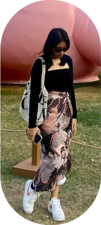

Vanya is a beautiful person, both inside and out. Her sparkling eyes and infectious smile never failed to lit me up. She has a contagious sense of humor that always brightens my day, and she’s always there for me when I need her. Her unwavering support and care have helped me through some of the toughest times in my life. She’s also incredibly professional and punctual, which I find very admirable. She takes care of me in so many ways, and I’m grateful for her every day. What I admire most about her, though, is her maturity. She’s wise beyond her years and has a way of looking at the world that inspires me to be a better person. I’m so lucky to have her in my life.
Happy Anniversary buat kitaaaa🎉🎉🎉. Tiga tahun udah berlalu nichh. I wish
kita berdua semakin makin makin better dan berkembang bersama menjadi THE BEST VERSION
OF OURSELVES honestly aku gatau banget mau ngomong apa brouuuuuuuu. pokonya aku ingin kita
menjadi lebih baik dan terus berusaha menjadi yang terbaik dehhhhh. Kalo buat kamuuuuu pokonya terusin hal
hal baik yang kamu lakuinn dan buang hal hal yang jelek. Aku yakin kalo kamu TERUS
NGELAKUIN YANG KAMU LAKUIN pasti kamu bisa meraih apapun ituuuuuu.
*Sedang membaca
surat suratmu sebagai referensi.....*
TERUS MENJADI VANYA YANG KEREN
Vanya keren yang selalu mengerti akuu, Vanya keren yang sangat terjadwal, Vanya keren yang
selalu support aku, Vanya keren dengan ide ide konyolnya, Vanya keren yang suka menangis *kurangin
tapi...*dan Vanya yang aneh. Terus menjadi Vanya yang Vanya banget pokonya *Vanya yang aku suka*
*APA LAGI YAAAAAAAAA*
JANGAN LUANGIN WAKTU BANYAK BANYAK BUAT
AKU
Kerjaan kamu banyak brouu santai aja aku akan selalu berada di sisimu kokk. Buat
sekarang kita fokus ke hal hal yang bisa kita lakuin sekarang yahhhh *mumpung masih muda* jadi waktu
luangnya dipake buat istirahat dehhh *kecuali kalo kangen brutal*
Terima
Kasih Vanya
Terima kasih karena atas semua yang kamu lakuin untuk aku, terima kasih karena
kamu keren, terima kasih buat kamu yang selalu dukung aku, terima kasih buat kamu yang selalu tak pernah
lelah memotivasi waktu aku demot *sering*, thank you for being you. Tanpa kamu yang seperti ini aku yakin
aku gaakan jadi orang yang seperti ini.
Karena kamu sudah menangis kayanya udah aja yhh wishesnyaaa
hwehhehehe. dan ini aku juga ngerjain sampe hampir jam 11 anjay.*belom distyling😵😵*
So, Jangan lupa
dibikin story biar dunia tau betapa kerennya kamu *dan aku*
With love, Sandi